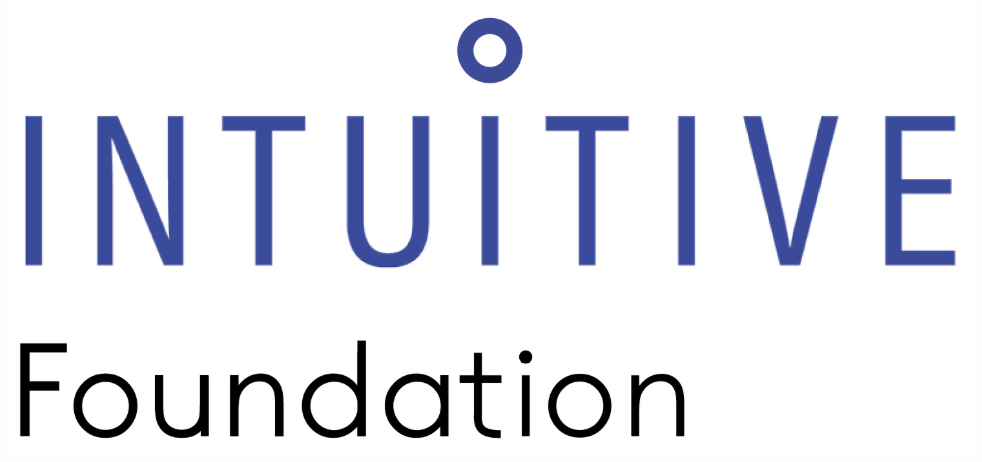
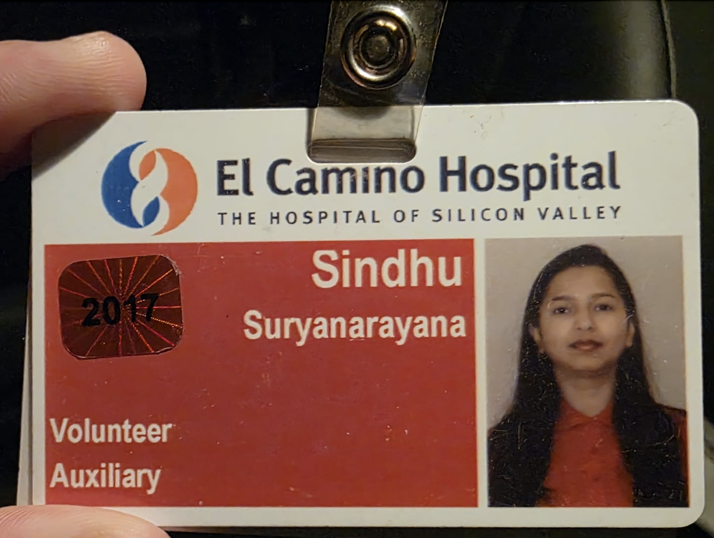

Sindhu Wong
Engineer turned future physician. I am committed to healing through innovation.
Contact MeWhy Medicine?
After over a decade building cutting-edge technologies at NVIDIA and Intuitive Surgical, I realized my true calling lies on the clinical side, serving patients face-to-face. My career has been dedicated to empowering healthcare through innovation, but now I seek to deliver that impact directly, as a physician.
Timeline

2009 – Cisco Systems
Software Engineer working on multimedia networking protocols.

2014 – NVIDIA
Senior Software Engineer driving power and performance optimization for next-generation GPUs, enabling cutting-edge AI and compute workloads.
2023 – Intuitive Surgical
Senior Software Engineer leading video pipeline optimization for the ION surgical robot.

2024 – Intuitive Foundation
Global Ambassador promoting STEM outreach and moderating global health symposiums.
Now – Future Physician
Applying to medical school to bring innovation directly to patient care.
Clinical & Volunteer Experience

- El Camino Hospital Volunteer (2017–2019): Patient support, training volunteers, and logistical assistance.
- Shadowed physicians at Santa Clara Medical Center, Bay Area Wellness, PAMF, and ER cardiology units.
Education
- UC Berkeley Extension — Pre-med post-bacc, GPA: 3.98 (scale of 4.0), MCAT: 519 (96th percentile)
- University of Florida — M.S. in Computer Engineering, GPA: 3.78 (scale of 4.0)
- VTU, India — B.E. in Computer Science, graduated with Distinction
Awards & Publications
-
CISCO Achievement & Star Awards for innovation and issue resolution
-
 UCSF Adaptogens Review — Published scoping review on Ayurvedic cancer therapies under Dr. Dhruva Anand [PMID]
UCSF Adaptogens Review — Published scoping review on Ayurvedic cancer therapies under Dr. Dhruva Anand [PMID]